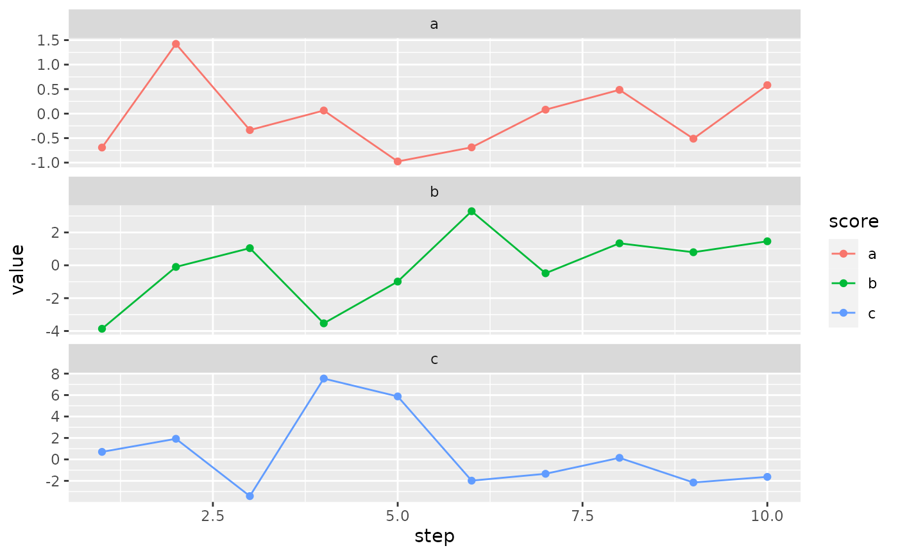
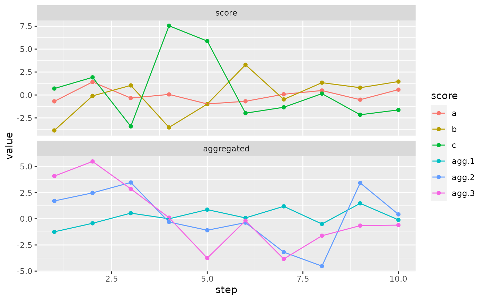

Usually it is created by optimize_design().
scoresContains a matrix of scores. The matrix size is usually
c(iterations + 1, length(bc$scoring_f))
aggregated_scoresContains a matrix of scores after aggregation.
The matrix size is usually c(iterations + 1, length(aggregated)),
where length(aggregated) is the length of aggregated scores vector.
Can be NULL if aggregated scores are not used.
seedSaved value of .Random.seed.
elapsedRunning time of the optimization.
last_stepLast iteration step for which the score was set.
n_stepsReturns number of steps in the OptimizationTrace.
new()Create a new OptimizationTrace object.
OptimizationTrace$new(n_steps, n_scores, score_names)n_stepsNumber of values to save. Usually n_steps == iterations + 1.
n_scoresNumber of scoring functions.
score_namesNames of scoring functions.
tr <- OptimizationTrace$new(10, 2, c("score1", "score2"))set_scores()Set scores for i-th step.
get_scores()Return individual (not aggregated!) scores by keeping only first last_step scores.
plot()Plot OptimizationTrace. Only the main score at the moment.
## ------------------------------------------------
## Method `OptimizationTrace$new`
## ------------------------------------------------
tr <- OptimizationTrace$new(10, 2, c("score1", "score2"))
## ------------------------------------------------
## Method `OptimizationTrace$set_scores`
## ------------------------------------------------
tr$set_scores(1, c(0.5, 0.5), NULL)
tr$set_scores(2, c(0.5, 0.5), NULL)
## ------------------------------------------------
## Method `OptimizationTrace$shrink`
## ------------------------------------------------
tr$shrink(2)
## ------------------------------------------------
## Method `OptimizationTrace$get_scores`
## ------------------------------------------------
tr$get_scores()
#> score1 score2
#> [1,] 0.5 0.5
#> [2,] 0.5 0.5
## ------------------------------------------------
## Method `OptimizationTrace$print`
## ------------------------------------------------
print(tr)
#> Optimization trace (2 score values, elapsed NULL).
#> Starting score: 0.5,0.5
#> Final score : 0.5,0.5
## ------------------------------------------------
## Method `OptimizationTrace$as_tibble`
## ------------------------------------------------
tr$as_tibble()
#> # A tibble: 4 × 4
#> type step score value
#> <fct> <int> <fct> <dbl>
#> 1 score 1 score1 0.5
#> 2 score 1 score2 0.5
#> 3 score 2 score1 0.5
#> 4 score 2 score2 0.5
## ------------------------------------------------
## Method `OptimizationTrace$plot`
## ------------------------------------------------
tr <- OptimizationTrace$new(10, 3, letters[1:3])
for (i in seq_len(10)) {
tr$set_scores(i, rnorm(3)*(1:3), rnorm(3)*(1:3))
}
# plot only the main scores
plot(tr)

# plot main and aggregated scores
plot(tr, include_aggregated=TRUE)
